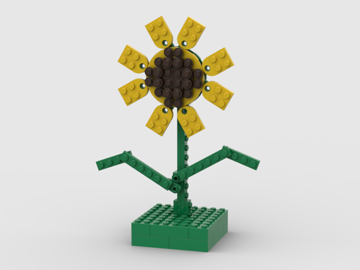

りんくうプレジャータウンシークルワークショップ(ブロックひまわりを作ろう)
こんにちは。大阪大学レゴ部のもっちーです。
今回、大阪府泉佐野市りんくうプレジャータウンシークル様のご依頼で、レゴを用いてひまわりを作る子ども向けのイベントを開催しました。
- 開催日時：2023年8月13日(日)
- 参加人数：部員 6名 一般参加者 50名
- 企画内容：ブロックひまわりを作ろう
今回のワークショップでは1回あたりの参加者は10名で、年齢制限はなく、1時間でひまわりを作ってもらうようになっていました。
ひまわりはテクニックパーツと呼ばれる上級者向けのパーツを用いていないため、小学生以下の子どもたちでも保護者のサポートがあれば時間内に完成させられるだろうと思っていました。
ワークショップにはたくさんの方が参加していただき、最終回以外は満席になりました。中には幼稚園生もいて、完成させられるか少し心配になりましたが、保護者や部員のサポートもあり、全員が1時間以内に完成させられました。また、レゴの経験がある子どももたくさんいて、10分以内に完成させた子どももいて驚かされました。
ひまわり自体の難易度はそこまで高くないので、レゴに慣れている子どもたちは簡単に感じられたかもしれませんが、初めてレゴに触れた子どもたちは難しそうに作っていました。中でも花びらの製作に手間取っていたように思いました。中心の円形のパーツの間に花びらをはさんで固定するのですが、円形のパーツを上手くっつけることができずに試行錯誤している子どもたちが多くいました。苦労の末、完成したときには笑顔で「できた！」と保護者にひまわりを見せている様子を見て私までも嬉しく感じました。
私自身ワークショップには何度も参加しているため、慣れているつもりでした。しかし、開催場所が空港に近いこともあってか海外からの観光客が多く、英語で質問されて上手く説明できなかったり、焦ってしまって前もって並んでいた他のお客様よりも早く案内してしまうなどのトラブルも起こしてしまいました。幸い外国語学部所属で英語が堪能な部員に助けてもらい無事に案内することができました。今までほとんど英語を話す機会がなかったのですが、今回のようにいつ英語を話さなければいけない状況になるかわからないので、普段から英語の勉強をしておく必要があると感じました。
最後に本イベントに参加してくださった方々、りんくうプレジャータウンタウンシークルの皆様、本当にありがとうございました。
もっちー